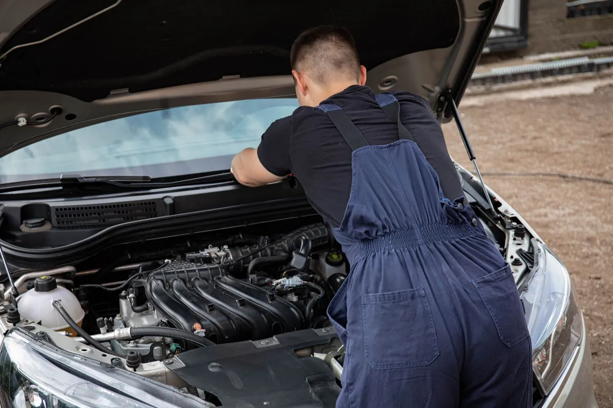

The full shop, minus the shop. We bring it to wherever your car is parked.
Mobile auto glass service in Melbourne, FL means every repair or replacement we offer can happen at your home, your workplace, or the shoulder of the road, without you ever needing to drive on damaged glass or arrange a ride to a shop. Our van carries the glass, resin, adhesives, and calibration equipment needed for most vehicles in Brevard County.

The process starts the same way a shop visit would: a phone call or a photo to identify the damage, followed by scheduling a time that works around your day instead of the other way around. When the technician arrives, they set up on a level section of driveway, parking lot, or curb, and carry out the same chip repair, windshield replacement, or window swap they would perform in a shop bay.
The only real difference from a shop visit is the environment. Everything else, from the adhesive used to the calibration equipment, is identical to what a fixed-location shop would use.
Mobile service makes the most sense any time driving to a shop is inconvenient, unsafe, or simply not possible. A cracked windshield that blocks part of your view is not something you want to drive across town with, and a family running on one car cannot always spare a few hours to sit in a shop waiting room.
It also solves the problem of a vehicle that will not start, or one parked at a job site or work lot where the driver has no ability to leave during the day.
Brevard County spreads out along the coast, and a shop located in one part of Melbourne can mean a real drive for someone living in Palm Bay or working out in Viera. Mobile service removes that travel time entirely, since the appointment happens wherever the car already is.
Florida heat is another factor. Waiting in a shop lobby is one thing in January and a very different experience in August, and mobile service means you are never stuck waiting around a shop in the middle of a heat advisory.
Most jobs are a straightforward fit for mobile service, but a few things affect the setup. The vehicle needs a reasonably level, legal place to park for the length of the job, since working on an incline can affect how an adhesive sets. Extreme weather, specifically lightning or heavy downpours, can also push a mobile appointment back for safety.
A small number of vehicles need a specific indoor environment for camera calibration, in which case the glass work itself still happens on site, and only the calibration step gets scheduled at a shop separately.
Curious what calibration involves once the new glass is in? Read about ADAS calibration next.
Yes, as long as there is a legal, reasonably level place to park for the length of the job, we can come to an office lot, a job site, or anywhere else your car happens to be parked during the day.
Light rain is usually not a problem since the actual bonding area stays covered during the job, but a technician may reschedule during heavy Florida downpours or lightning, both for safety and because moisture in the bonding area can weaken the adhesive.
For most common Melbourne-area vehicles, yes. Some calibrations need a flat, well-lit space with enough clearance in front of the vehicle, which a driveway or parking lot usually provides, though a small number of vehicles require a controlled shop environment instead.
We cover Melbourne, West Melbourne, Palm Bay, Indialantic, Melbourne Beach, Satellite Beach, Rockledge, and Viera as standard territory, and can often reach a bit further out in Brevard County on request.